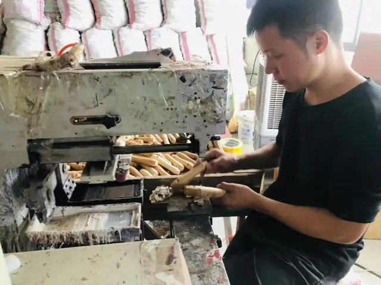
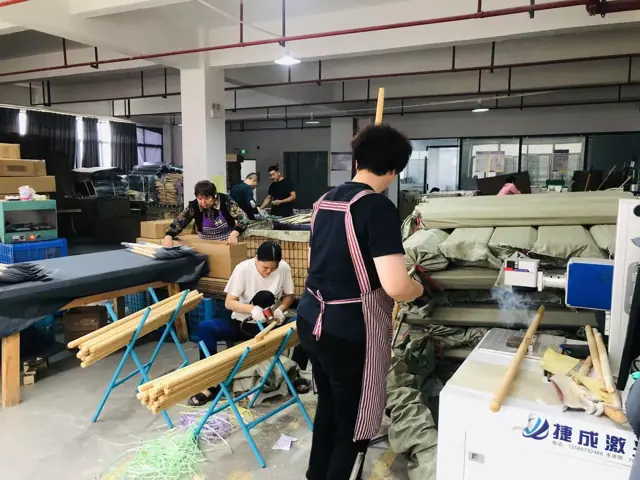
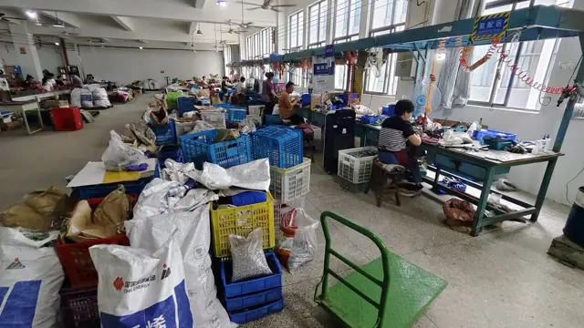
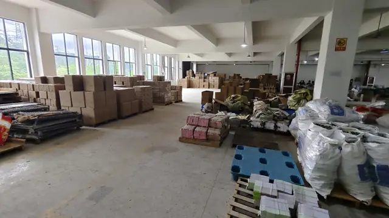
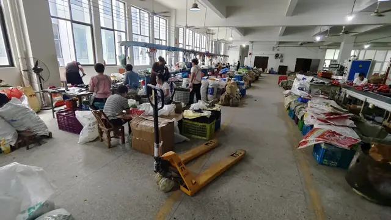

Opens Google Translate in a new tab. No selection is stored.
Birdland technical atlas
See the route from material to tool.
Choose a production gate to see what enters, what must be controlled, which routes exist and what a buyer should ask. This is public process education—not a customer drawing, specification or programme record.
01 / MATERIAL
Material control
WHAT ENTERSGrade, thickness, condition and traceability.
CONTROL POINTSpecified material must match the intended forming and performance route.
BUYER SHOULD ASKWhich material property is critical for the intended use?
Nine input families, and the grades inside each one.
A garden tool is rarely one material. These are the nine families a hand-tool programme draws on, the grades commonly specified inside each, and the trade-off that moves the unit cost. The same nine families are tracked as live inputs on our Buyer Desk.
M01
Blade & spring steel
Cutting blades, anvils, springs, hardened working edges.
SK5
65Mn
420J2
SUS420J2
SUS440C
WHAT MOVES COSTHarder grades hold an edge longer but are more brittle and slower to machine. Carbon steel needs a plated layer; hardenable stainless does not.
WHAT MOVES COST304 resists corrosion best but cannot be hardened; 410 and 420 can be hardened for edges. Stainless removes a plating step but costs more per kilo.
M03
Plating & coating layer
Corrosion protection and appearance on carbon-steel parts.
Zinc
Nickel-chrome
Dacromet
Powder coat
E-coat
WHAT MOVES COSTCost tracks layer thickness and the salt-spray hours you need. Specify the hours, not the thickest available option.
WHAT MOVES COSTA two-shot over-mould feels better in the hand and costs more than a slip-on sleeve or a dip coating.
M07
Timber
Wooden handles and shafts.
Beech
Ash
Bamboo
FSC / PEFC stock
WHAT MOVES COSTCertified and kiln-dried stock carries a premium. Grade drives the reject rate more than the price per piece does.
M08
Fabric & textile
Gloves, storage bags, vests, blinds and covers.
Canvas
Polyester
Coated fabric
Mesh
WHAT MOVES COSTDenier, coating and stitch density set the cost. A coating adds water resistance and price.
M09
Packaging board
Export cartons, colour boxes, hang cards and inserts.
Corrugated
Folding boxboard
Recycled content
Moulded pulp
WHAT MOVES COSTRecycled content and mono-material choices affect both price and destination compliance. See the packaging section below.
Hardness is a choice, not a maximum
Blade hardness is specified as a band, because the same steel can be treated soft and tough or hard and brittle. Harder is not automatically better.
Left: tougher, easier to re-sharpen
Shaded: common hand-tool blade band
Right: holds an edge, chips sooner
What a protected surface is made of
“Plated” is not one thing. A protective surface is a stack, and each layer is a separate cost and a separate control point.
1 · Base metal
2 · Surface preparation
3 · Protective layer
4 · Finish or topcoat
Packaging
The pack decides compliance as much as the tool does.
Packaging is where a programme most often meets destination regulation, and where a late change is most expensive. These are the formats a hand tool normally ships in, followed by the lower-impact route for each one.
Corrugated export carton
Colour box
Hang tag / header card
Blister pack
Skin pack
Paper-and-plastic composite
Shrink film
Label set
Void fill
Strapping
Pallet — wood or plastic
Lower-impact option
Replaces
Why buyers ask for it
FSC / PEFC certified board
Uncertified board
A baseline requirement for most large retail accounts.
Recycled-content board
Virgin board
Allows a declared recycled percentage on the pack.
Mono-material paper pack
Paper-plus-plastic blister
Recyclable without the consumer separating materials.
Moulded pulp or paper blister
PET or PVC blister
The main route to removing plastic from a retail pack.
Paper hang tab
Moulded plastic hook
Avoids a plastic line item on an otherwise paper pack.
Soy or water-based ink
Solvent-based ink
Lowers the solvent load in printing.
Paper or gummed tape
PP packing tape
The whole carton can enter one recycling stream.
Unprinted export carton
Full-colour outer
Lowest cost and lowest footprint for plain export.
Recycled or rPET film
PVC shrink film
A compromise where a film genuinely cannot be removed.
Heat-treated or plastic pallet
Untreated wood pallet
Meets ISPM-15 phytosanitary requirements on export.
Which options are available depends on the pack format, the volume and the destination. Tell us the market and the retail presentation, and the compliant routes can be quoted alongside the conventional ones.
Cost structure
A landed price is four blocks, not one number.
Most sourcing conversations move only the first block. In a hand-tool programme the last two are frequently larger than the saving being negotiated on the first.
BLOCK 01MaterialSteel, resin, timber, fabric. Traded inputs — grade and weight per piece drive it, and the index moves weekly.
BLOCK 02ConversionForming, heat treatment, finishing and assembly labour. Cycle time, tooling condition and yield drive it.
BLOCK 03PackagingCarton, colour box, hang tag, pallet. Routinely underestimated — a pack format can outweigh a material saving.
BLOCK 04LogisticsInland trucking, customs, port charges and ocean freight. Cube per carton decides this, not weight.
Run your own numbers: the landed-cost tool on the Buyer Desk uses these same four blocks, with the current material and freight readings already loaded.
Where this happens
The same route, on the floor.
Every gate above corresponds to a physical station. These are stations in the production and warehousing chain behind a Birdland programme.
Taiwan base — origin & shippingMaterial stock

Wooden handle making

Laser marking & QC

Assembly & calibrationInspection on the floor

Finished-goods warehouse

Outbound shipping
How to use the atlas
Ask about the control point, not only the finished appearance.
FunctionBegin with the work the tool must perform and the environment it must face.MaterialChoose grade and condition for the intended forming, load and finish.ProcessConnect tooling, sequence and inspection to the characteristics that matter.Hand-offVerify agreed control points before production release and shipment.